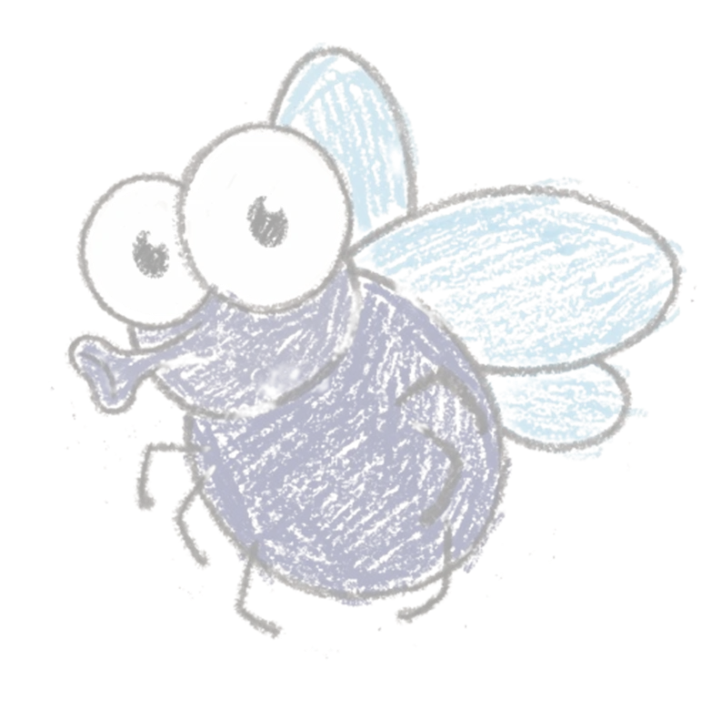

🧬
生命的藍圖
染色體 × 生殖｜互動複習 2.0
九年級自主複習
0 / 3 關完成
⌂ 首頁

帶著問題動手做
染色體的
條、對、套
先想一想，再親自操作，最後用結果確認自己的想法。
① 果蠅 · 10 條
② 跳鼠 · 12 條
③ 牡蠣 · 三套
開始複習
染色體數量為教學簡化模型，並非圖中物種的實際染色體數。
細胞核
已整理完成
染色體池
拖曳染色體到右邊；也可以先點選，再點目標。
操作提示
完成這一步 →
先預測 · 再驗證
↻ 📱
建議橫向操作
橫向空間比較大，拖曳染色體更順手。直向也能繼續操作喔！
繼續操作